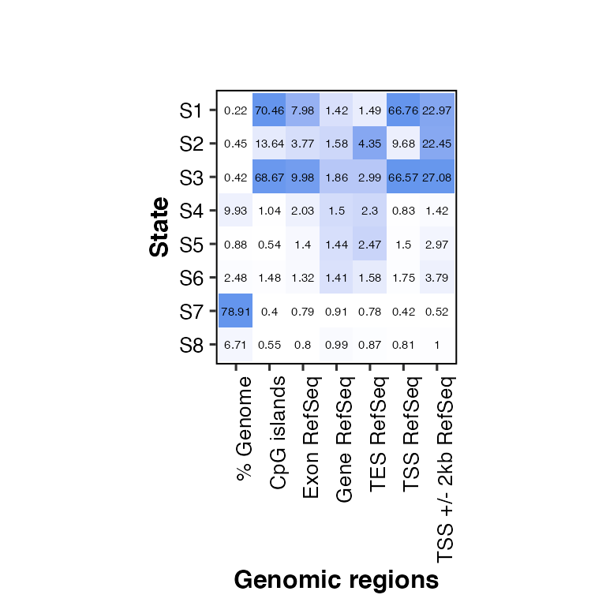
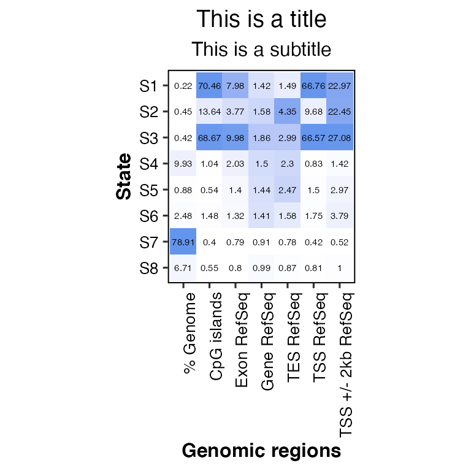
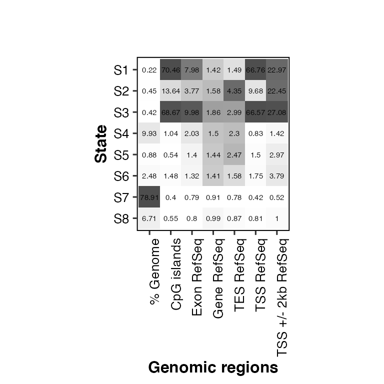
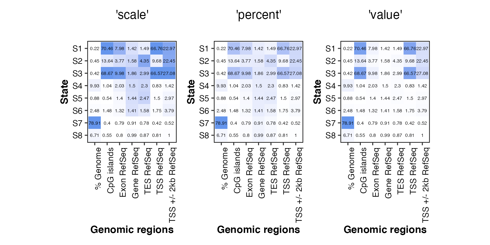
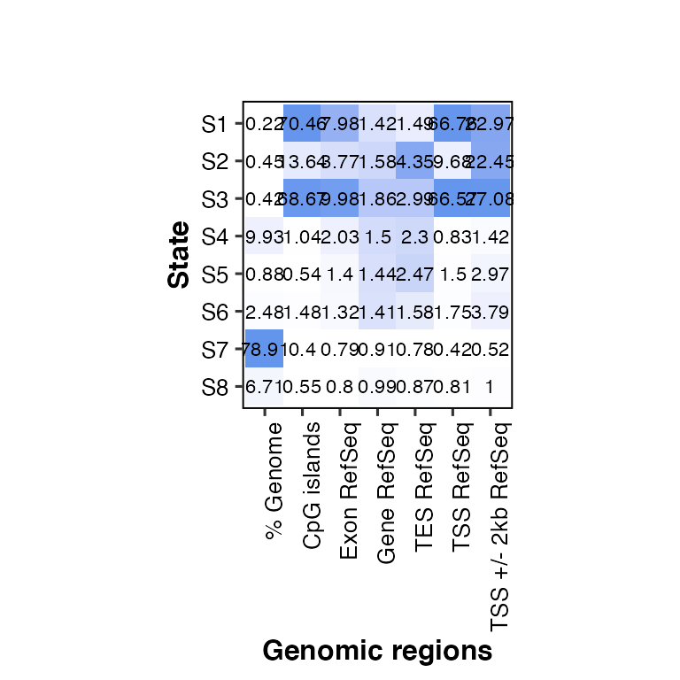
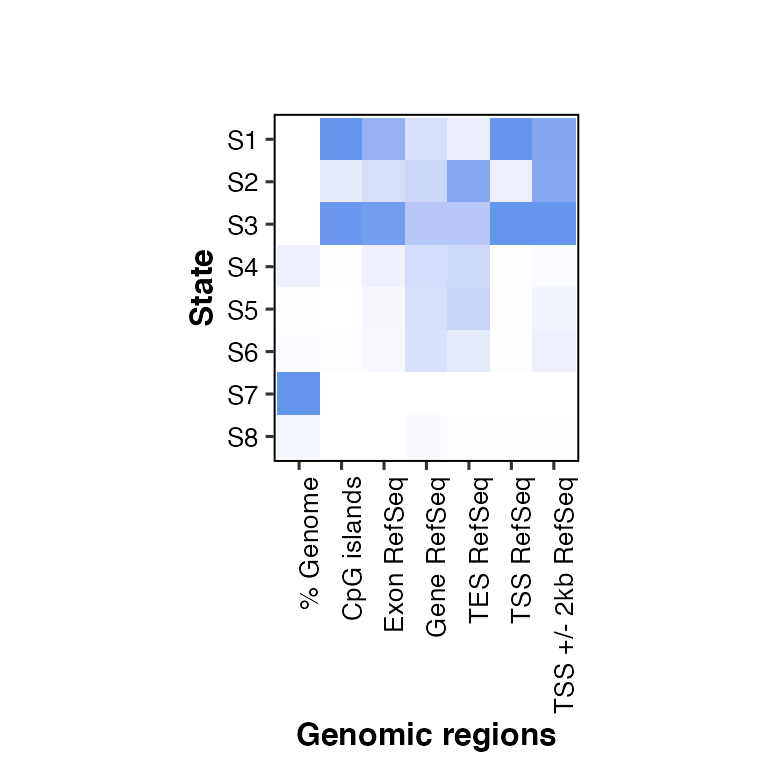

vignettes/03-overlap2hm.Rmd
03-overlap2hm.RmdchromHMMviewR::overlap2hm()
# install devtools if not installed
if(!require(devtools)){ install.packages("devtools") }
# install chromHMMviewR if not installed
if(!require(chromHMMviewR)){ devtools::install_github("amitjavilaventura/chromHMMviewR") }
# load chromHMMviewR
library(chromHMMviewR)
# read overlap file from the demodata
overlaps <- read.delim("../demodata/conditionX_8_overlap.txt")
# head
head(overlaps)## state..Emission.order. Genome.. CpGIsland.hg38.bed.gz RefSeqExon.hg38.bed.gz
## 1 1 0.22264 70.46286 7.98271
## 2 2 0.44664 13.64083 3.77196
## 3 3 0.42034 68.67053 9.98436
## 4 4 9.92537 1.04092 2.02856
## 5 5 0.88475 0.53824 1.40042
## 6 6 2.47907 1.48283 1.31637
## RefSeqGene.hg38.bed.gz RefSeqTES.hg38.bed.gz RefSeqTSS.hg38.bed.gz
## 1 1.42469 1.48807 66.75551
## 2 1.57501 4.35027 9.67735
## 3 1.85742 2.98860 66.57028
## 4 1.49961 2.29835 0.82918
## 5 1.44084 2.46524 1.49866
## 6 1.41083 1.57865 1.75210
## RefSeqTSS2kb.hg38.bed.gz
## 1 22.97113
## 2 22.44641
## 3 27.08225
## 4 1.41808
## 5 2.96553
## 6 3.78615overlap2hm()
# set the states with numbers
# states should be named later depending on the results
states <- paste("S", 1:8, sep = "")
# set the names of the regions in the same order as in the overlap file
# (they do not need to have the exact same name as in the file)
# in this case, the regions are the default from ChromHMM hg38
regions <- c("% Genome", "CpG islands", "Exon RefSeq", "Gene RefSeq", "TES RefSeq", "TSS RefSeq", "TSS +/- 2kb RefSeq")
# call overlap2hm()
overlap2hm(data = overlaps, states = states, regions = regions)## Loading required package: dplyr##
## Attaching package: 'dplyr'## The following objects are masked from 'package:stats':
##
## filter, lag## The following objects are masked from 'package:base':
##
## intersect, setdiff, setequal, union## Loading required package: magrittr## Loading required package: reshape2## Loading required package: ggplot2## Loading required package: ggpubr## Using State as id variables
# call overlap2hm()
overlap2hm(data = "../demodata/conditionX_8_overlap.txt", states = states, regions = regions)## Using State as id variables
# change title and subtitle
overlap2hm(data = overlaps, states = states, regions = regions, title = "This is a title", subtitle = "This is a subtitle")## Using State as id variables
# change color of the heatmap: color = "gray30"
overlap2hm(data = overlaps, states = states, regions = regions, color = "gray30")## Using State as id variables
#if(!require(patchwork)){ devtools::install_github("thomasp85/patchwork") }
library(patchwork) # to show the plots side-by-side
# change the scaling of the color (by default, chromHMM normalizes each column separately)
# must be one of 'scale' (default), 'percent' or 'value'
# the numbers showing the enrichment don't change
overlap2hm(data = overlaps, states = states, regions = regions,
scale_color = "scale", title = "'scale'") + # scale by column (default in ChromHMM and chromHMMviewR)
overlap2hm(data = overlaps, states = states, regions = regions,
scale_color = "percent", title = "'percent'") + # percentage of each cell within its column
overlap2hm(data = overlaps, states = states, regions = regions,
scale_color = "value", title = "'value'") # use the enrichment value in each cell## Using State as id variables
## Using State as id variables
## Using State as id variables
# change the size of the likelihood labels (default: score_size = 2)
overlap2hm(data = overlaps, states = states, regions = regions, score_size = 3)## Using State as id variables
# without likelihood labels: show_score = F
overlap2hm(data = overlaps, states = states, regions = regions, show_score = F)## Using State as id variables